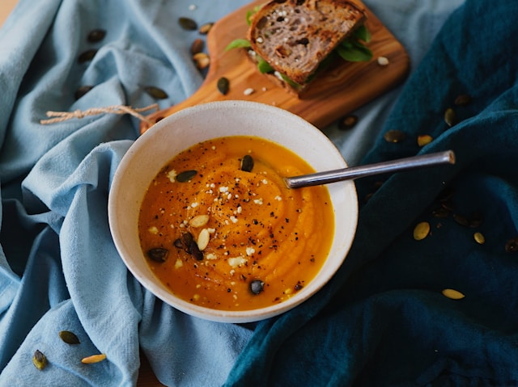

Home
Pumpkin Soup

Description
This pumpkin soup is smooth, warming, and perfect for colder days. It has a naturally sweet, earthy flavor from
the pumpkin, balanced with savory aromatics and a touch of spice. The soup is simple to make, comforting, and
works well as both a light lunch or a cozy starter for dinner.
Ingredients
- Pumpkin (peeled and cubed)
- Olive oil or butter
- Onion
- Garlic
- Vegetable stock
- Salt
- Black pepper
- Ground nutmeg (optional)
- Chili flakes or cayenne pepper (optional)
- Cream or coconut milk (optional, for serving)
Steps
- Heat olive oil or butter in a large pot over medium heat.
- Add chopped onion and cook until soft and translucent.
- Add garlic and cook briefly until fragrant.
- Add the pumpkin cubes and stir to coat them in the oil.
- Pour in the vegetable stock until the pumpkin is just covered.
- Bring to a boil, then reduce heat and let it simmer until the pumpkin is very soft.
- Blend the soup until smooth using an immersion blender or regular blender.
- Season with salt, pepper, and nutmeg or chili if using.
- Stir in cream or coconut milk if desired and gently reheat before serving.